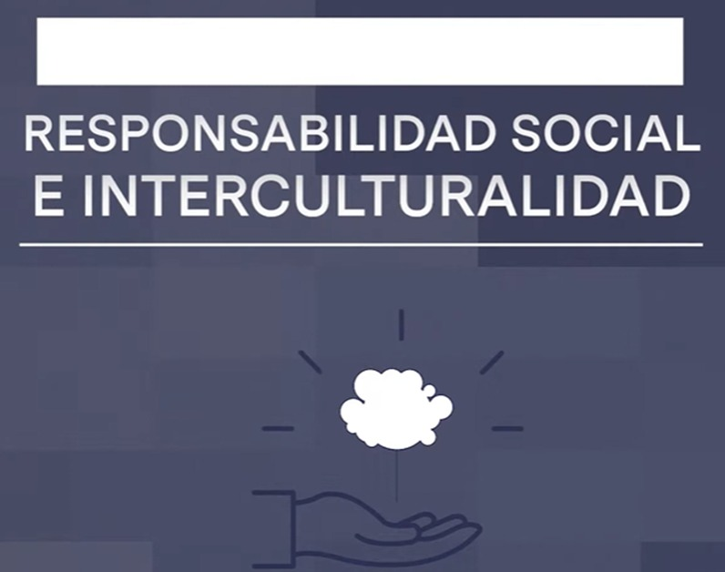

Crear una calavera literaria fue una actividad emocionante y creativa que me permitió explorar la tradición mexicana del Día de Muertos de una manera única. A través de la escritura, pude rendir homenaje a personas conocidas o figuras históricas de una manera humorística y satírica. Jugando con rimas y metáforas, delineé las características y logros de cada individuo, celebrando su vida de una manera inesperada y divertida. Además, esta actividad me llevó a reflexionar sobre la muerte y la importancia de honrar y recordar a quienes ya no están con nosotros. Fue una experiencia enriquecedora que combinó la expresión artística con la tradición cultural, dejándome con un profundo aprecio por la creatividad y la riqueza del folclore mexicano.
Literatura
Competencia 9
Responsabilidad social